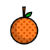

On the Subject of Fruits
If farmer A sells apples and farmer B sells bananas, what does farmer C sell? … Medicine.
The reset button resets the module.
Look up the fruits on the buttons. Take (1st, 3rd) and (2nd, 4th) in the table below (row, col). Take their sum % 4 + 1. The button in this position is the submit button.
 |
||||
|---|---|---|---|---|
| 1 | 2 | 3 | 4 | |
| 4 | 3 | 2 | 1 | |
| 3 | 1 | 4 | 2 | |
| 2 | 4 | 1 | 3 |
The position of the button to press is: sum of serial# digits % 4 + 1. If this is the same as the submit button, use the button to its right.
The number of presses is given by: #unlits + position of button to press.
Upon a strike, the module will reset and the buttons will change.